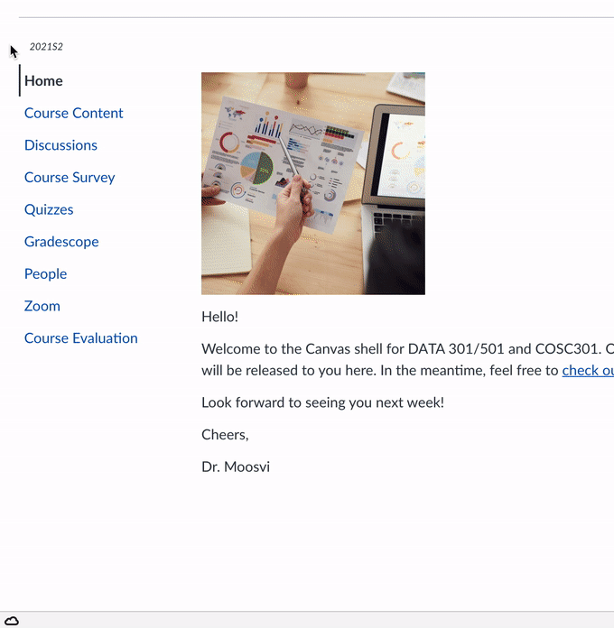

After the First Class#
There are several things you’ll need to do at the start of the course to get set up with all the technology, accounts, and services we’ll be using. I’ve split these tasks up into several chunks so it’s a bit more manageable.
1. Join Ed Discussion and say hi!
You will be invited to Ed Discussion based on the email you enter in this form! I will invite folks a couple of times a day.

2. Read the Unsyllabus
The syllabus and unsyllabus is now live on Canvas under the “Course Content” sidebar item. You can also view it outside of Canvas here.
I want to know what you think of the course unsyllabus! Yes, I want your thoughts, feedback, and opinions on how you want the course to go this term. If one of you has a good idea for a change, adjustment or addition - I’d love to adopt it if it fits with the course. I strongly believe that you are now in charge of your own education, and I am just a guide to help point you in the right direction.
The Unsyllabus also has lots of details about how this class will be run, my teaching philosophy, dates, due dates, and other course policies. I encourage you to read it!
3. Figure out where your Labs will be held
On the Student Service Center, you can find the time, building, and room number of your lab.
Once you know the building and room number, you can use the UBC online interactive maps to find the building. It’ll be worth it for you to spend some time figuring out where you need to be so you’re not stressed out - labs will begin in Week 2!
4. Start setting up your computer
You should now start setting up your computer to install all the software necessary for the course, so that you are ready for all the class demos, labs, activities, etc… The teaching team is available via Ed Discussion to support you through the process of installing the software on your personal machine. You can click Setup Your Machine.